Våpensøstrene som musikkspill:
En fantasifull opplevelse
• Ingars kommentarer: En fantasifull opplevelse
• Fra programmet: Introduksjon
• Ekstra: Flere bilder fra musikkspillet
• Vår opprinnelige annonsering
Av Ingar Knudtsen • Foto: Tone Breivik og Vanja Knudtsen
Naturligvis sa jeg ikke nei da elever ved musikklinja på Atlanten Videregående skole spurte om å få skrive og framføre et musikkspill basert på boka Våpensøstrene.
Hva jeg hadde tenkt skulle komme utav det, det er jeg vel ikke helt sikker på, men jeg hadde jo samarbeidet med musikklinja på Atlanten før, og med godt resultat.
Da dreide det seg imidlertid om stykker jeg hadde skrevet og som de framførte – dette var noe annet. Med unntak av noen råd på veien, og litt historikk omkring amasonenes verden og tidsalder, var det ikke noen oppgaver i dette for meg.
Et lite øyeblikk kjentes det nesten litt farlig…
Boka og bøkene
Boka er jo etterhvert blitt temmelig kjent, og den opprinnelige trilogien om amasonene ble supplert med to bøker til i 2001 og 2002, Amasoner og Gudinnas døtre.
Våpensøstrene ble første gang utgitt 1987 og deretter pånytt i 1999 sammen med Rød måne og Løvinnens sjel, de to andre bøkene i trilogien.
Historia til boka/bøkene og hvordan de har nektet å dø og er blitt lest og leses av stadig nye lesere er jo i seg sjøl et lite eventyr. De er fremdeles de bøkene jeg får mest reaksjoner på, både positive og negative. Holdninga til bøkene og temaet har gradvis endret karakter og blitt mer entydig positiv de siste åra. Hvor mange særemner som er blitt skrevet på dem siden 1987 av lesere over det ganske land aner jeg ikke, men det er mange! Interessant nok er nå også mange av særemneskriverne av hankjønn.
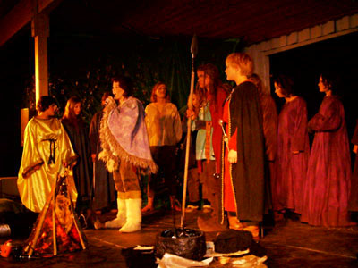
De tre flyktningeflokkene møtes i fjellene, og Tanitsja
synger at det er hun som er den utvalgte, ikke Zoella.
Og kanskje merkeligst av alt, spredninga av bøkene har skjedd nesten helt uten noen form for virkelig publisitet eller reklame omkring dem! På landsbasis, om enn ikke lokalt, har de nemlig i motsetning til mange av mine andre bøker nesten ikke blitt anmeldt eller omtalt.
Stadig kommer fremdeles ønskene om at jeg må fortsette å skrive om “våpensøstrene”, men jeg tviler sterkt på at det skjer. Sjøl om jeg innser at med disse fem bøkene har jeg fått oppleve et engasjement i min litteratur som jeg neppe kan håpe på igjen og med andre bøker, og som det kanskje også er få forfattere forunt å få oppleve.
Musikkspillet
Etter denne lange og antakelig helt unødvendige innledninga kommer jeg så til hovedsaka, nemlig musikkspillet. En forfatter får naturligvis sjelden lov til å “anmelde” sin egen roman, omskrevet i en ny form og sett gjennom øynene til andre.
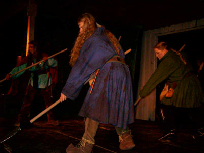
Våpentreningsdans
Det kjentes og kjennes som et enestående privilegium. Jeg fikk lov til å lese manus da det var så godt som ferdig, men valgte å bare gå igjennom det uten å kommentere for mye eller gå for grundig inn i det.
Det føltes ikke lenger som “mitt”, og jeg syntes ikke jeg hadde noen rett til å direkte gripe inn i scenetolkninga av romanen. Jeg ble imidlertid allerede på dette tidspunktet klar over at ungdommene hadde laget noe som var bedre enn jeg egentlig hadde tenkt meg muligheten av.
Men sjølsagt virket det også som en temmelig beskåret versjon, noe annet ville jo vært absolutt umulig med tanke på at det skulle framføres på scenen.
Elevbedriften “Panodrama” ble etablert for å gjennomføre og koordinere alle aspekter ved prosjektet, som jo var det rene puslespillet av kreativitet fra mange mennesker. Boka ble delt mellom grupper som fikk skrive hver sin part. En annen og ikke mindre viktig oppgave var å skrive musikken til stykket.
Forfatterkollega Ove Borøchstein stilte for øvrig opp og øste fra sine rikholdige erfaringer med å skrive sanger og sangtekster, og jeg innrømmer gjerne at jeg også følte at jeg lærte noe av det!
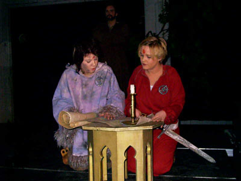
Tanitsja og Ata
På toppen av alt kom elevenes arbeide med å administrere, promotere og stå for alle praktiske detaljer i forbindelse med oppsettinga. Interessant nok er forresten styret i Panodrama nesten utelukkende unge kvinner!
Kostymer og utstyr ble lånt fra Kristiansundsoperaens rikholdige rekvisittlager, og innimellom fikk jeg stadig små rapporter om at alt var i rute. Like før premieren ble jeg også invitert til en temmelig kaotisk men spennende sceneprøve, og hadde jeg ikke vært med på å sette opp teater før så ville jeg vel kanske blitt litt nervøs da…
Lokalet som var ei brygge tilhørende museet i Kristiansund kunne vel neppe kalles ideelt, verken når det gjelder utforming eller beliggenhet, men det slo meg straks at de mulighetene som var i lokalet var godt utnyttet.
Premieredagen viste som vanlig ikke været seg fra sin aller beste side, men en god del interesserte hadde funnet fram til brygga – og de som kom, inklusive meg, tror jeg fikk en teateropplevelse som var helt utenom det vanlige.
La gå at for meg var mange av skikkelsene jo temmelig forskjellige fra de jeg hadde skapt i hodet mitt da jeg skrev bøkene, og enkelte av kostymene og våpnene var mer middelalder enn fjern fortid, men det virket knapt forstyrrende i mer enn fem sekunder.
Det ble en forrykende forestilling med dramatikk, nerve, til tider svært godt skuespill og dans og sist men slett ikke minst en aldeles herlig musikk!
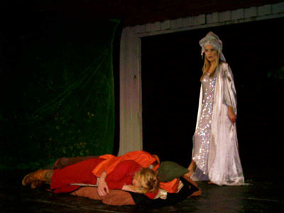
Gudinna går inn i Atas drøm og forteller om den krigen som kommer.
For meg kjentes det til tider nesten uvirkelig at disse unge menneskene så gjennomført hadde forstått og tolket korrekt og uten det minste forbehold meningsinnholdet og handlinga i boka. Som stadig ble ytterligere poengtert og understreket av sangen og musikken.
I fokus sto sjølsagt Ata, M’bela og Tanitsja i henholdsvis Grete Stavik Rotlids, Marianne Gjeldnes og Christina Briviks skikkelser. Men Marit Otnes som Vetra må også framheves, og selveste Gudinna i Ingrid Sevaldsen Dyrnes skikkelse kommer i min bevissthet fra nå av for alltid til å være Henne… En av de verste skurkene i stykket var naturligvis den forræderske Zoella, utmerket tatt vare på av Elisabeth Opaas.
Både våpentreningsdansen og slagscenen på slutten var nærmest perfekte. Slagscenen var faktisk skremmende! Særlig kanskje for oss som satt på første rad mens “likene” bokstavelig talt falt overende foran beina på oss.
Jeg innrømmer gjerne at jeg et par ganger underveis i stykket kjente meg djupt rørt og berørt av det som foregikk på scenen og av sangene.
Den formastelige tanken gikk også gjennom hodet mitt at operaen i Kristiansund godt kunne ha valgt å sette opp dette på sin sentrale scene framfor mange av de gjespende operettetraverne de har satset på gjennom åra. Og naturligvis med de samme aktørene og musikerne, men med hele operaens mektige budsjett og prestisje og markedføringsapparat bak.
Den neste tanken var både mer realistisk og mer kreativ. Det måtte kunne gå an å gjøre noen skikkelige videoopptak. Noe som jeg nå forstår også ble gjort? I så fall er jeg spent på resultatet.
Men viktigst av alt er det at musikken må bli tatt godt vare på. Den kunne etter min mening godt bli CD og salgsvare. At kun det teipte varer evig er vel etterhvert en sannhet uten en eneste modifikasjon?
Så var det hele brått over.
Jeg har overvært avslutningsforestillinga.
Med skole-forestillingene har noen hundre mennesker i alt sett stykket. Likevel kjennes det som alt for få, for alle som var engasjert i det.
Tanken som dukket opp mens jeg kjører hjemover er:
Takk for at jeg fikk oppleve dette.
Fra programmet:
Våpensøstrene
En forestilling basert på Ingar Knudtsens fantasyroman “Våpensøstrene”.
Handlingen foregår for ca. 3000 år siden.
Verden er i forandring. I uminnelige tider har kvinnene styrt, men det matriarkalske samfunnet er nå truet. For hver dag som går, fortsetter mannsdominerte sivilisasjoner og troen på mannsguder å utbre seg. Byer blir inntatt, kvinnehærer blir knust og morgudinnens prestinner blir mishandlet og drept.
Men kvinnekrigernes Gudinne vil ikke la dette skje. Krigeren Ata Dorje, krigerprestinnen M’Bela og trellkvinnen Tanitsja kommer fra forskjellige kulturer og forskjellig tid. Nå blir de forent av skjebnen for å ta opp kampen.
Rolleliste
Skuespillere, statister og dansere:
Ata Dorje: Grethe Stavik Rotlid
Tanitsja: Christina Breivik
M’Bela: Marianne Gjeldnes
Vetra: Mari Otnes
Itandza: Mari Kristoffer
Jelamar: Marit Ørstad
Hizha: Lena Moe
Zoella: Elisabeth Opaas
Gudinne: Ingrid Sevaldsen Dyrnes
Prins Harim: Alf Kenneth Sandvær
Høvding Graah: Roar Sivertsen
T’mogurake: Rolf Erik Sandvær
Keimal Ar: Ove Solli
Peth: Line Mehlum
An: Linda Flø
Kintia: Ann Solveig Boksasp
Speider: Ramona Sandø
Slavehandler i Tyvenes By: Håvard Finset
Menn i Atador/Prins Harims hær: Kristoffer Lervåg, Hans Petter Gyldenskog, Håvard Finset, Ove Solli, Trond Bråten.
Statister/dansere: Lina Gagnat, Oda Henden, Hilde Gjernes, Linda Grytten, Kristin Eriksen, Marit Silseth, Ramona Sandø, Ane Grønseth, Ingrid Sevaldsen Dyrnes
Scenearbeidere:
Lina Turøy, Ane Gønseth, Thomas Håbet, Henriette Øfstedal Kolset (inspisient)
Lyd/lys:
Joachim Ohrvik, Stephan Ulvund Øien
Band:
Piano: Ida Svendsen (bandleder)
Gitar: Erik Torset
Bass: Ken André Lyngvær
Fløyte: Sigrid Saltnes
Tuba: Øystein Aakvik
Trommer: Ola Harstad
Regi:
Lena Marie Gammelsæter, Linda Flø.
Koreografi:
Ramona Sandø, Ingrid Sevaldsen Dyrnes, Lena Moe.
Talskvinne presse & media:
Line Mehlum.
Flere bilder fra musikkspillet
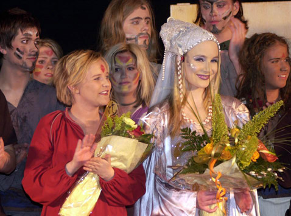
Ata Dorje (Grethe Stavik Rotlid) og Gudinna (Ingrid Sevaldsen Dyrnes).
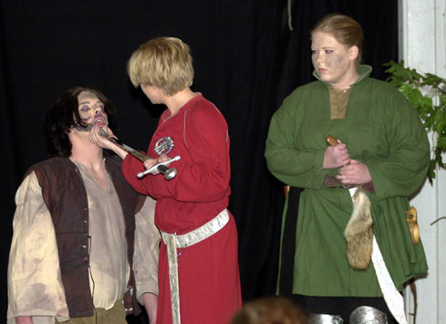
Ata (Grethe Stavik Rotlid) og Vetra (Mari Otnes).
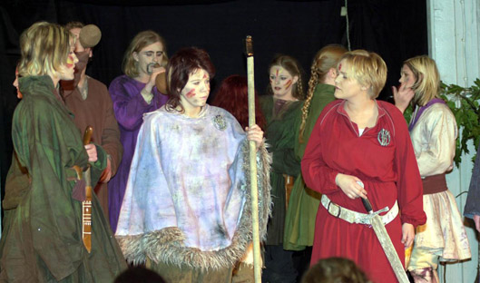
Kintia (Ann Solveig Boksasp), Tanitsja (Christina Breivik) og Ata (Grethe Stavik Rotlid).
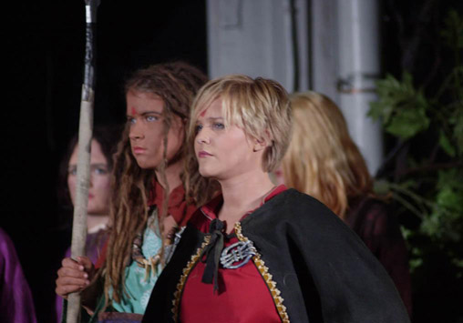
M’Bela (Marianne Gjeldnes) og Ata (Grethe Stavik Rotlid).
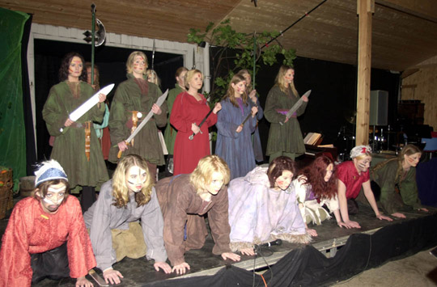
Våpentrening.
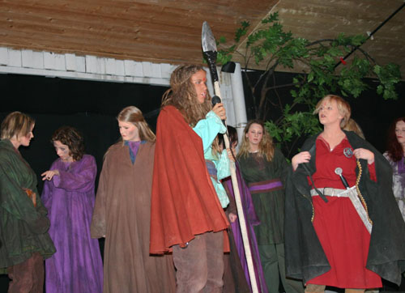
M’Bela (Marianne Gjeldnes) og Ata (Grethe Stavik Rotlid).
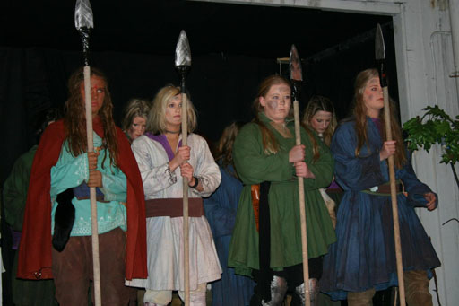
Fire våpensøstre.
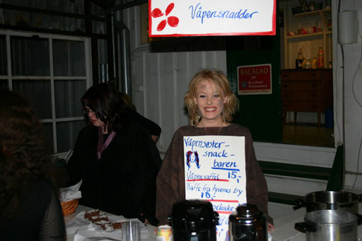
Snadder på Våpensøsterkaféen.
Vår opprinnelige annonsering
De som måtte befinne seg et sted i nærheten av Kristiansund neste uke har muligheten for å få med seg en oppsetning av Ingar Knudtsens roman Våpensøstrene, den første boka i hans Amazone-serie.
Av og
Onsdag 17. mars 2004 er det premiere på Panodrama ungdomsbedrifts musikkspill “Våpensøstrene” basert på boka med samme navn. Sted: Milnbrygga i Kristiansund.
“Panodrama” består av elever ved Atlanten videregående skole, musikklinja, som har skrevet både manus og musikk med utgangspukt i romanen.
Stykket går ut uka, dvs. til og med fredag 19. mars.
Se også kalenderen på nettstedet til Atlanten videregående skole:
http://www.atlanten.vgs.no/atlanten.asp?side=kalender_lesmer.asp&Kalenderid=156